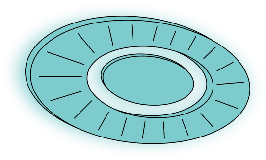
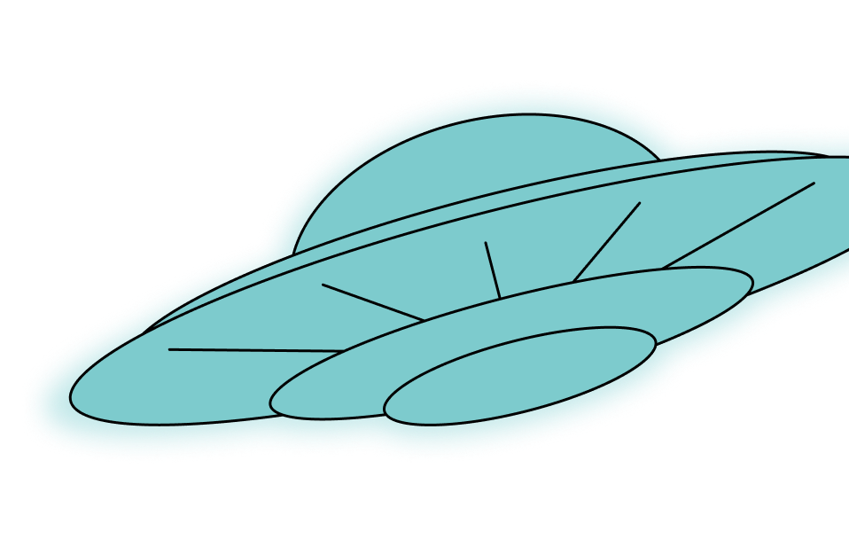
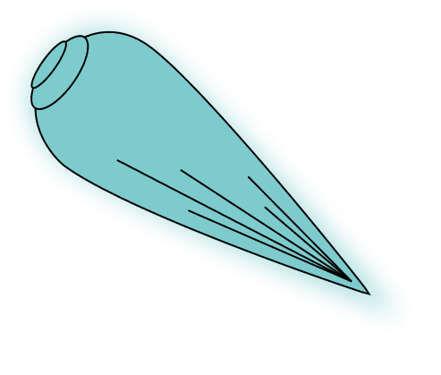
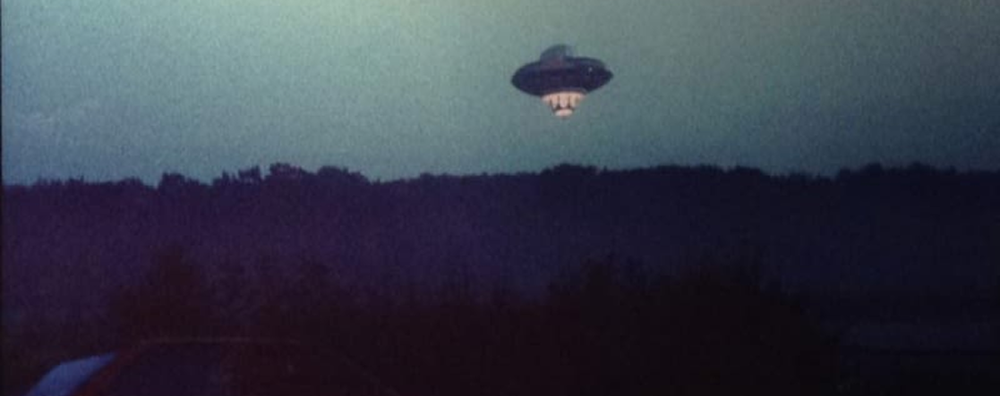
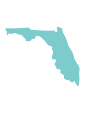
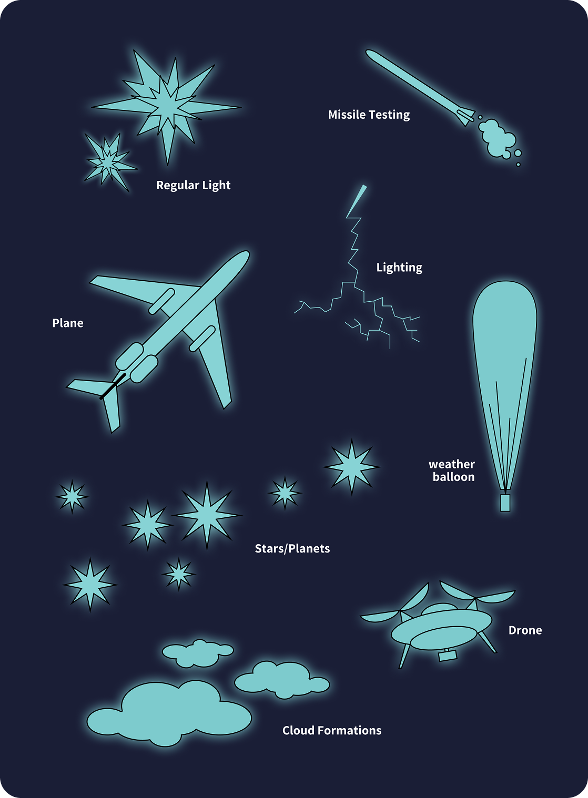

Whether it’s a satellite, a secret aircraft, or something not-of-this-world, every sighting leaves behind a story. Ready to decode the cosmic whispers?

First sighted in 1947, UFO, stands for Unidentified Flying Object, is any object or phenomenon observed in the sky that cannot be immediately identified. The term gained prominence after World War II with the advent of rocketry.
Learn more hereUFO sighting patterns may seem random or purely coincidental, but what if we could pinpoint the most likely locations and uncover the most common pattern characteristics? By transforming the dataset into meaningful visualizations, we aim to uncover and clearly communicate the insights behind UFO sighting trends.
The team decided to narrow our scope to the United States, where the majority of sightings occur, likely because the concept of UFOs is more culturally prominent and rooted in this region.
UFO sightings have been recorded since the 1940s, but for this project our team narrowed the scope to the past 20 years to focus on more relevant and consistently documented reports. Each year, thousands of sightings are reported, but which year had the most? Let’s take a closer look at the data to find out.
But why don’t you make a guess between 1995-2014!
Invalid year. Try again.
From 1995 to 2010, UFO sightings remained relatively steady with only minor growth. Reports peaked in 2012, highlighted by notable U.S. cases such as a large triangular craft seen by an Air Force veteran at Langley AFB, a cylindrical object over Utah’s Skinwalker Ranch, and glowing orbs reported in Missouri and New York.
The peak may be linked to the official end of the U.S. government’s secretive UFO program, AATIP. Following 2012, sightings dropped noticeably, returning closer to the levels seen earlier in the decade.
Although UFO reports occur nationwide, certain regions consistently record higher levels of activity. Before creating the visualization, the team hypothesized that most sightings would come from rural or less populated areas. However, the visualization reveals a different pattern...
Drag the slider to see some changes over the years
There are the top 6 states/cities with the most reported sighting...
With 7,628 sightings, it has more than the 2nd and 3rd states combined.

With 3,395 sightings, Florida has the most sightings along the east coast.
With 3,303 sightings, Washington holds the city with the most amount of sightings: Seattle with 445.
With 2,903 sightings, Texas is fourth place despite being the most populous state in the south central region
With 2,169 sightings, Illinois is one of the most active states in the Midwest, drive largely by Chicago’s dense population and busy night sky activity.
With 2,140 sightings, Arizona stands out in the Southwest, where clear desert skies contribute to high visibility.
These states, especially the highly populated ones are filled with lights and other atmospheric objects, making it plausible for some of these UFO sightings to be mistaken from something else.
Which shapes appear most often, and what might that reveal about the nature of these sightings?
UFO reports describe a wide variety of shapes, ranging from classic discs and spheres to triangles, cylinders, and even more unusual forms. With such diversity, it can be challenging to determine which shapes are reported most frequently. So, among hundreds or even thousands of reports, which shape emerges as the most common?
Click on the bars to learn about the top 5 UFO shape!
From the dataset, the most commonly identified ufo shapes are the light, triangle, circle, fireball and sphere shapes. We had intentionally excluded the unknown and other shapes as the credibility of those reports are up to debate as they lack detail in their sightings.
The light shape dominates UFO reports, with approximately 12,000 sightings, nearly double that of the other four shapes in the top five. UFO enthusiasts can therefore expect that a flashing light is the most commonly reported feature during sightings. However, the team remains cautious, as these flashing lights could also be mistaken for common objects such as aircraft or drones, so the result should be interpreted with a grain of salt.
Now that we know the top five most common UFO shapes, the next step is to explore how these shapes are distributed across different states. Are certain shapes more frequently reported in specific regions, or do they appear evenly across the country? By mapping the data at the state level, we can better understand which UFO shapes people are most likely to encounter in different regions.
Select a UFO shape to see where sightings of that type have occurred.
“Having established the locations where UFO reports are most frequently concentrated, the next question concerns how long we should expect each sighting to last? Are the typical sightings too fast to interpret, or will you be able to sit back and ponder?
Disregarding extreme cases (5% of sightings) the majority of sightings happen within 1 minutes > to 2 minute mark. On rare occasions, the sightings may last upwards to 4 minutes (250 seconds) - 10 minutes (650 seconds).
However, The left skewness of data indicates the amount of sightings reported within a short period of time. This indicates a higher potential of the UFO being mistaken for something else as most viewers may not had enough time to process what they were seeing. As many reports show, ufo sightings are commonly mistaken for everyday, explainable objects such as planes, lights or clouds. (BCC article)
When planning your next UFO-sighting trip in the United States, your best chances of observing activity are in California on the West Coast and Florida on the East Coast. Sightings most commonly report light-shaped objects, though triangular, circular, fireball, and spherical forms are also noted. Most encounters last less than a minute, though some rare cases extend beyond four minutes.
Could some UFO sightings be something else...?
The team would like to note that people sometimes mistake UFO sightings for other objects, such as airplanes, clouds, and more. Even though the next sighting could occur just around the block from your home, there is always a possibility that it may be something else, as approximately 70% of reports are ultimately classified as false alarms. When observing a potential UFO, be sure to distinguish it from common objects before reporting the sighting. 70% of the report ended being a false alarm.

So what??
Take this analysis with a grain of salt, as it is not intended to provide definitive proof of UFO activity. Rather, it offers UFO chasers some data-driven insights that may help inform their next search. For the general public, it simply highlights interesting patterns in how sightings are reported across regions. But you never know...One just might be floating above you right now...